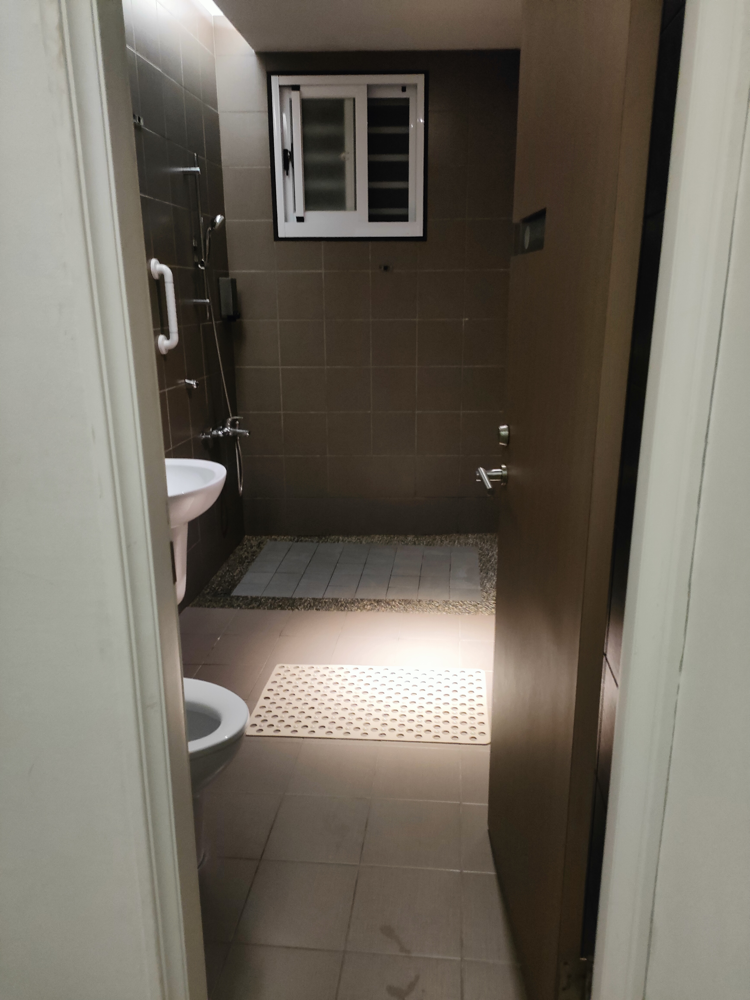
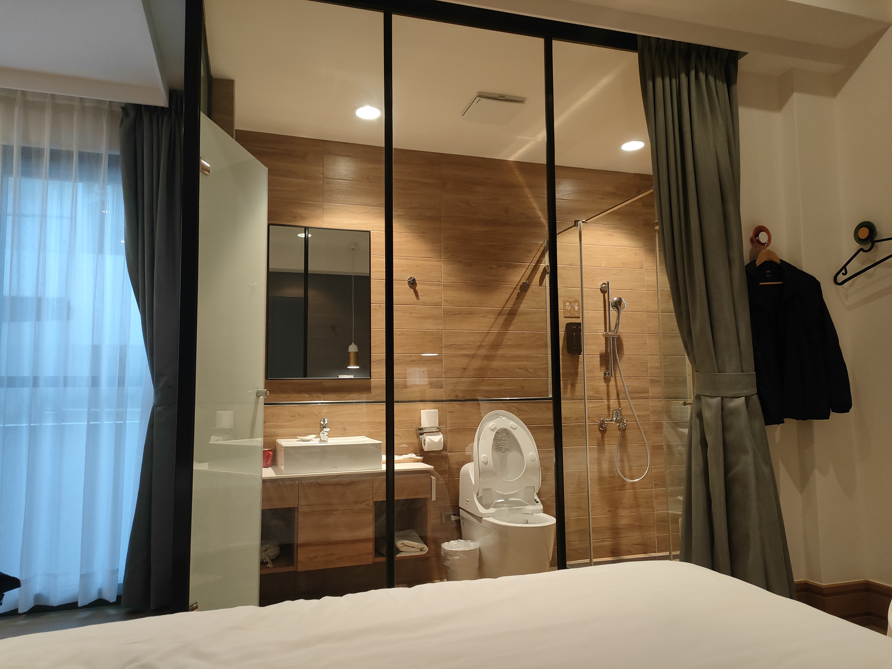

騎車環島
台中To台南
第一天直達了嘉義"林聰明砂鍋魚頭"來進行我們的午餐，接下來就繼續前往了極西點國聖燈塔，風非常的大。由於靠近海邊，海岸跟天邊連在一起真的很美。

晚上下榻了台南圈旅，有沙發有小廚房，廁所也挺寬敞的，雖然只有兩張床但對於五個人來說綽綽有餘。最特別的點是，這個旅店沒有人員在現場幫忙辦理入住，不管是大門還是房間門口都是由網路上告知密碼。

台南To屏東
第二天早上吃了台南有名的牛肉湯，就繼續前往墾丁，沿路的風景越來越美，也逐漸可以看到海岸邊，穿梭在田野間，真的很愜意。

中間去了鹿境，園內有許多可愛的梅花鹿與水豚，門票可兌換牧草和胡蘿蔔來餵食，也可現場購買其他東西來餵食。

由於原先要入住的承億文旅墾丁雅客小半島因為出遊前幾天的颱風影響而斷電，因緣計畫下住進了福華大飯店，床很大，四人房卻只有兩個人住，真的是賺到，早餐是自助式的，很豐盛。

屏東To台東
第三天前往了極南點的鵝鑾鼻燈塔，之後就繼續前往了台東，沿路的台26線可以看到東部的海岸線，海岸天邊那種連在一起一望無際的感覺真的是美極了。

後面去了多良車站，真的跟想像中一樣美，車站旁就是海，難怪那麼多遊客會接二連三地來到這，來留下美照與回憶。

接下來就是俗稱櫻木花道平交道的地方，拍照技術如果很好，肯定可以在這拍到平交道，海還有天三點連成一線。

晚上下榻了樸草行旅，這是我旅行7天中最推薦的一家，主要是這家民宿也才剛開業沒多久，東西基本上都是新的，2樓還有開放的活動空間，裡面有按摩椅還有足部震動機，主要是房間內的廁所牆隔著的是透明玻璃，真的是讓我大開眼界。

台東To花蓮
第三天前往了極南點的鵝鑾鼻燈塔，之後就繼續前往了台東，沿路的台26線可以看到東部的海岸線，海岸天邊那種連在一起一望無際的感覺真的是美極了。